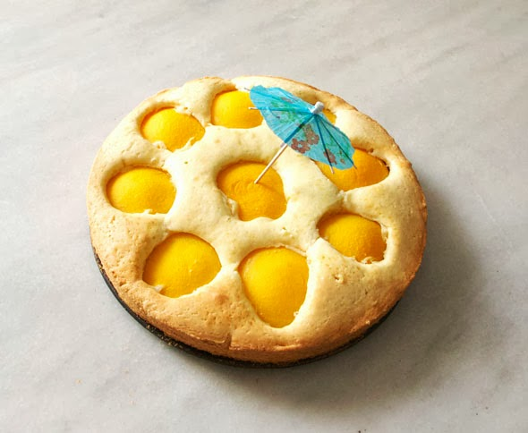

Pinterest
Instagram
ES
EN
DE
☰ Menu
Home
The House
Accessories
Decorate
Instruccions
Illustration
Custom water bottles
Notebook crafts and activities 01
App NOT ONLINE RIGHT NOW
Blog
Holidays
Christmas
Easter
Halloween
Carnival & costumes
Valentine’s Day
Birthday
Mother’s/Father’s Day
Back to school
Seasons
Spring
Summer
Autumn
Winter
What to do
Toys
Games
Printables
Food & recipes
Decoration
Painting
Experiments
Outdoors
Learning
Animals
Gifts & jewellery
Building & tricks
Other crafts
Material
Paper
Cardboard
Paper rolls
Recycling
Stones
Leaves & nature
Fabric & sewing
Home
›
Blog
›
Food
Food
Category
Food
Homemade lollipops
Food
Strawberry man
Food
Josefa's spring cake
Food
Mini cupcakes to go
Food
The lion cake
Food
With a worm!
Occasion
Three Kings cake
Food
Travel cookies
Occasion
Winter landscape on a stollen
Food
School sandwich
Occasion
Autumn leaf cupcakes
Food
Snails with poppy
Food
Plum jam
Food
Island cake

Play
Watermelon lanterns
Food
Spring cookies
Occasion
Terrace vegetable garden
Food
Mini balloon cake topper
Food
Apple tasting game
Occasion
Spring flowers
Occasion
La mona: Easter bread
Occasion
Happy Valentine's Day
Food
Dried apple shapes
Occasion
Valentine's meringues
← Newer
Page 2 / 4
Older →